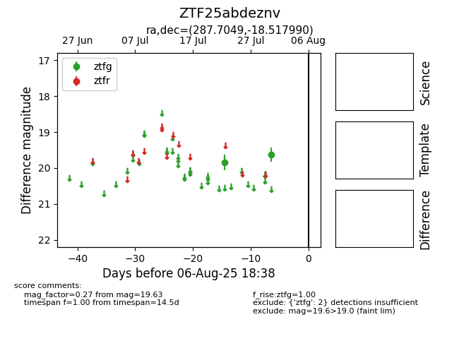

Target ZTF25abdeznv at 2025-08-06 19:55, see:
FINK: fink-portal.org/ZTF25abdeznv
Lasair: lasair-ztf.lsst.ac.uk/objects/ZTF25abdeznv
ALeRCE: alerce.online/object/ZTF25abdeznv
alt names
ZTF25abdeznv (ztf,fink)
coordinates:
equatorial (ra, dec) = (287.7049,-18.51799)
galactic (l, b) = (18.3302,-12.48031)
photometry
last atlasc=14.59, atlaso=17.25, ztfg=19.63
4 atlasc, 3 atlaso, 2 ztfg detections
